Repaso de la Tanda 10N4
Pequeños arreglos del repaso con dos teléfonos: el lápiz y los logros siempre visibles, la campana, la franja de aviso, los menús de opciones, los permisos, el aviso de «cierra» y las entradas en la ficha y en DÍAS. Marca cada punto en tu teléfono cuando lo hayas comprobado (se guarda en este navegador).
§0 · Antes de empezar ✅ Hecho — Prompt guardado en docs/dias/PROMPT_TANDA10N4.md y en el commitDónde: No es de móvil. ✅ Hecho — Design al día con APP RUTAS.zip (sin uploads/ ni screenshots/): Avisos Gestion, Avisos Franja, Hojas Opciones, Ficha Cabecera, Parada Entrada, y copiados (sin hacer aquí, son de la 10T) Entradas Horas, Ver Entrada y Entradas PestanaDónde: No es de móvil. §0a · Tus dudas de la 10N3 ✅ Hecho — 1. Las fechas del viaje, bloqueadas también para quien solo recomienda (solo las cambia el administrador)Ya estaba así (useDatesCalendarStore: si el permiso no es 'admin', el calendario no se abre). Solo comprobado, con una prueba de código. Dónde: Con la cuenta invitada (bengala.ingresos) en un viaje de Eric con permiso «Solo recomienda» o «Puede editar»: tocar las fechas en RUTA no abre el calendario. ✅ Hecho — 2. El perfil viejo, fuera del todo: un solo perfil para todos; con los logros apagados, el nuevo sin EXP, vitrina ni billete (con pasaporte, viajes y ajustes)Borrados CabeceraDeSiempre, FilaDeViaje, MapaMisViajes, CifrasDelMapa y el código del mapa/chinchetas de viajesPerfil.ts. PerfilSheet queda solo como cáscara (cabecera, Créditos, Nuevo viaje, álbum). Sin logros no se pide nada a /api/logros; su pasaporte cuenta países y ciudades de los viajes guardados y no abre el de los logros. Dónde: Perfil (círculo de arriba a la derecha) con los logros apagados (producción): Hola + foto + ajustes, Mi pasaporte, Mis viajes con portadas. Con logros=on se ve el de siempre. 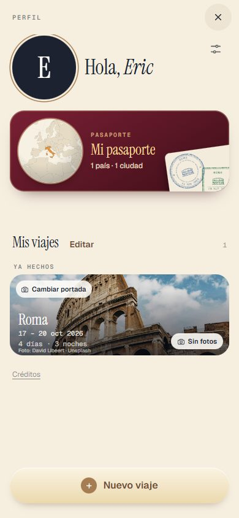
✅ Hecho — 3. «Tu parte · 31 €» en lugar de «por persona» cuando una reserva es solo para parte del grupo; para todo el grupo, «por persona»Nuevo componente EtiquetaPorPersona en PantallaPresupuesto: «Tu parte · 31,00 €» (importe con formatoImporte, nunca un € escrito a mano) o «€ •••» con el ojo cerrado; para todo el grupo «31,00 € por persona». Sin captura de la pastilla: se comprueba con el código de verdad. Dónde: Presupuesto (cartera) de un viaje compartido, con una entrada reservada para 2 de 4: la pastilla de la tarjeta oscura; tocar el ojo para ver el importe. ✅ Hecho — 4. Fuera «Abierto» (la pastilla del viaje abierto en Mis viajes)Desaparece con FilaDeViaje; la tarjeta nueva ya no lo escribía. Pruebas antiguas que lo pedían (pruebaFase6y4_perfil y las del mapa/fila) cambiadas para comprobar el perfil nuevo. Dónde: Perfil > Mis viajes, con cualquier cuenta: ninguna tarjeta dice «Abierto». 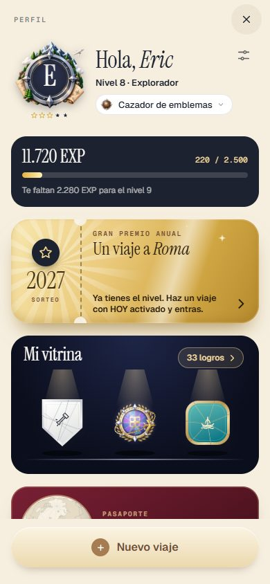
§0b · El lápiz y los logros ✅ Hecho — El lápiz de la propuesta y el botón de los logros son flotantes y se ven en todas las pantallas: RUTA, DÍAS, EXPLORAR (también a pantalla completa, con lista y mapa), las fichas, RESERVAS, el presupuesto, HOYDónde: Con la cuenta que solo recomienda (invitada): haz un cambio en la ruta y recorre RUTA, DÍAS, EXPLORAR (abre una tarjeta a pantalla completa), la ficha de un sitio, RESERVAS, el presupuesto y HOY: el lápiz (con el numerito) y el botón de los logros salen siempre. El administrador ve solo el de los logros. 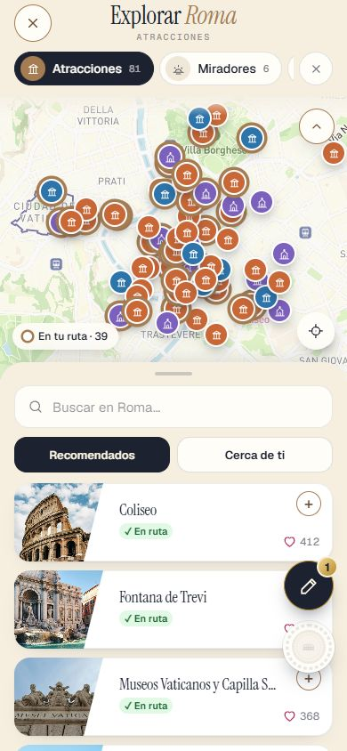
✅ Hecho — Error grave de la prueba de Eric: el invitado que añade un sitio desde EXPLORAR no veía el lápiz hasta cerrarlo todo y volver a la rutaDónde: Cuenta invitada (recomendar): EXPLORAR > una tarjeta > [+] de un sitio > elegir día. Al cerrar la hoja, el lápiz con el numerito está ya encima de la pantalla completa de EXPLORAR, sin salir a la ruta. Causa: las pantallas completas (z-index 50 a 90) tapaban los botones, que estaban en 40 y 41. 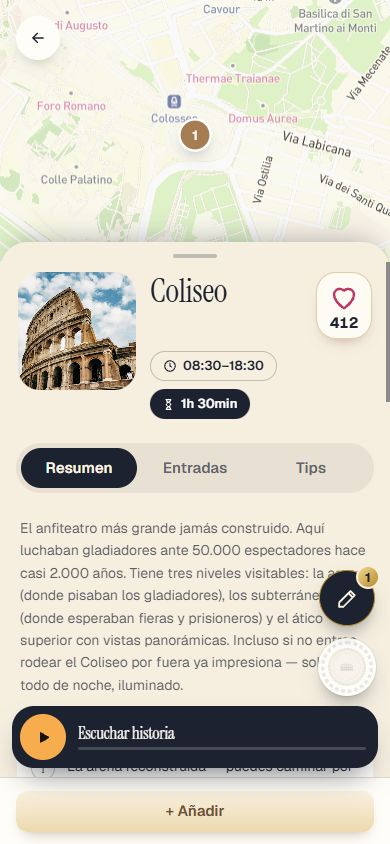
✅ Hecho — Solo se quedan debajo de una hoja que sale desde abajo mientras está abierta, y vuelven al cerrarseComprobado con la hoja de «¿A qué día lo añadimos?», la de la propuesta y la de los logros. Detecta por rol de diálogo (role=dialog, alertdialog, data-hoja y el Modal); una hoja nueva que no use ninguno de esos no los esconde. Dónde: En EXPLORAR, toca [+] en un sitio: la hoja sube y los dos botones quedan debajo; ciérrala y vuelven. Igual al tocar el lápiz o el botón de los logros. 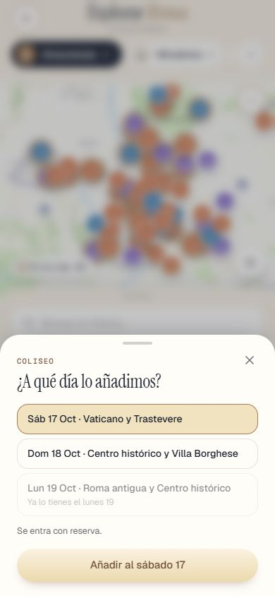
⚠️ A medias — Nunca tapan el último elemento de una lista (hueco al final) ni los botones de abajoHueco al final puesto y medido en la lista de EXPLORAR, la ficha, el presupuesto y las cuentas (150 px con logros, 220 con el lápiz); DÍAS, EXPLORAR en tarjetas y RESERVAS ya lo tenían. Los botones de abajo se esquivan (los botones suben) en HOY, el pie de la ficha ([Cambiar por este], [Añadir]), la barra de elegir varios y la barra de «Escuchar historia». No he revisado una a una las demás pantallas con barra propia (añadir parada, excursiones, alojamiento, otras fichas): se marcan con data-evitar-flotantes. Dónde: Baja hasta el final de la lista de EXPLORAR, de una ficha y del presupuesto: el último elemento queda por encima de los botones. En la ficha, los botones suben por encima de la barra «Escuchar historia». 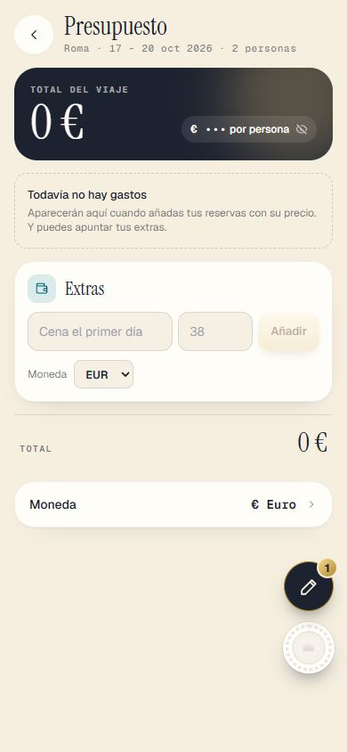
§1 · La pastilla del pase ✅ Hecho — La pastilla «Pase Roma» ya no sale medio segundo como comprada al cargar la ruta: mientras no se sabe, va sin estado, nunca «comprado» por adelantadoCausa: usePaseEstado arrancaba en «cobro apagado, todo abierto» y la pastilla se pintaba con el pase hasta que llegaba /api/pase/estado. Ahora arranca en «sin saber» y la pastilla deja su sitio vacío. Probado con la respuesta retrasada 2,5 s y muestreo cada 30 ms, con y sin pase: solo pasa de cargando al estado real. Dónde: RUTA, tarjeta del destino, al abrir un viaje con la cuenta sin pase (y con pase): la pastilla aparece ya en su estado, sin «comprada» un instante. 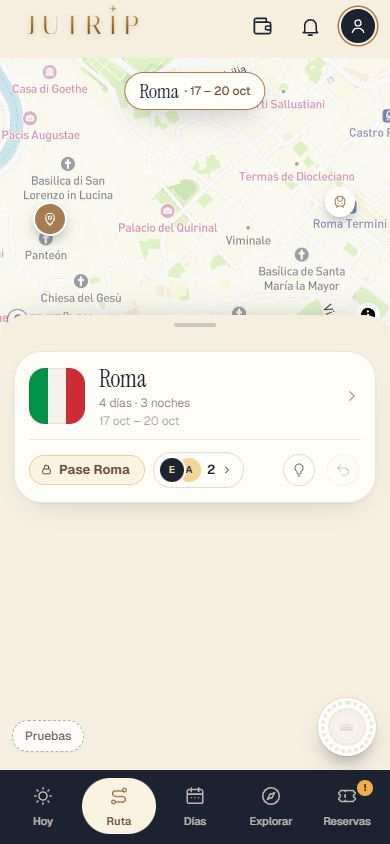
⚠️ A medias — Lo mismo en cualquier otro sitio que enseñe el pase (HOY, el perfil, los candados)HOY hecho: no se pinta ni «con pase» ni «sin pase» hasta saberlo (probado). El perfil no lee el estado del pase (no hay nada que arreglar). Los candados leen pagoActivo(), que no es reactivo y empieza abierto hasta que llega la respuesta: no lo he tocado porque, sin un aviso de repintado global, un candado podría quedarse cerrado a quien sí tiene pase. Queda para decidirlo. Dónde: Pestaña HOY de un viaje sin pase: al abrirla no sale un instante lo del viaje con pase. 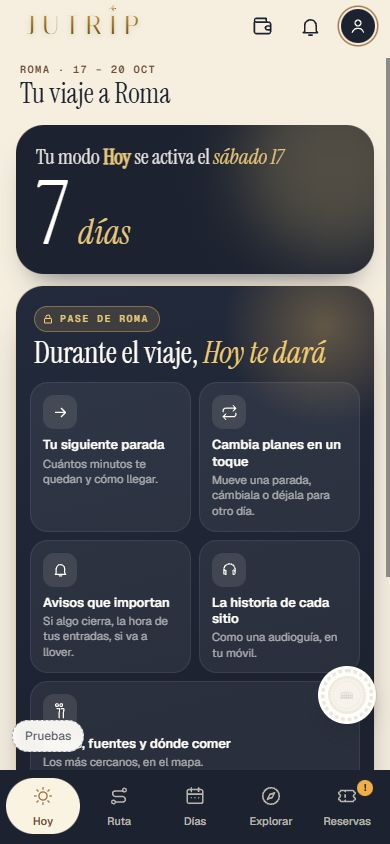
§1b · Una sola letra ✅ Hecho — El calendario para elegir las fechas (DurationSelector y .rdp-root) usa las mismas letras que el resto, como en Designfont-dmsans sustituido por font-sans (Geist) en DurationSelector, CompanionSelector, CuratedPlacesPool y ExperienceCategorySelector; .rdp-root ahora Geist. DurationSelector no se usa hoy en ninguna pantalla (el calendario que se ve es el de DateField, con .rdp-root). Dónde: Crear viaje > elegir fechas: el calendario con Geist, como el resto. ✅ Hecho — Quitar de index.css y tailwind.config.ts lo que ya no se use (Plus Jakarta Sans, Playfair Display, DM Sans) para que cargue menosFuera los dos @import de Google Fonts de index.css (Plus Jakarta Sans, Playfair Display y DM Sans: tres familias menos que bajar) y fontFamily playfair/dmsans de tailwind.config.ts. index.html ya solo cargaba Geist, Geist Mono, Instrument Serif e Italiana. Comprobado con grep que nada de src las usa. Dónde: No se ve; la app arranca bajando menos letras. ✅ Hecho — Buscar si queda alguna otra pantalla con otra letra (fuera del logo, Italiana) y decirloMedido en RUTA, DÍAS, RESERVAS, HOY y EXPLORAR: solo quedaba Helvetica Neue, la de Mapbox, en los números de las paradas del mapa (43 en DÍAS) y en la atribución del mapa. Arreglado con una regla en index.css. No he medido Perfil, Ajustes, Pasaporte ni las películas del pase por pantalla (por código no queda otra letra en src). Dónde: DÍAS: los números de las paradas del mapa ya van en Geist. §2 · La campana ✅ Hecho — Hacerla exactamente igual que Design «Avisos Gestion» (01 normal con [Seleccionar], 02 seleccionando, 03 después de eliminar): letras, tamaños, colores, iconos, fondo dorado claro del elegidoMedidas, colores y letras copiados de la pieza (tarjeta de 20 px, icono de 42 px, puntito dorado de 10 px, circulito de 24 px, franja oscura de 54 px). Dos diferencias: el icono de «Fecha especial» es un calendario dibujado en trazo fino (Design pone el carácter ▦) y no hay grabador de arriba porque es pantalla completa. Dónde: Campana (arriba a la derecha) › Seleccionar › elegir avisos › Eliminar. Con cualquier cuenta con avisos. 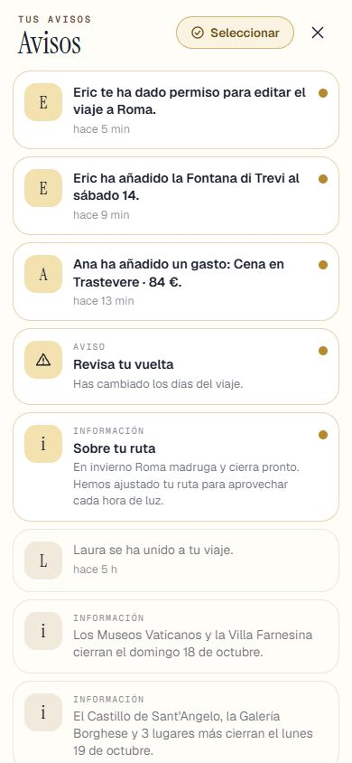
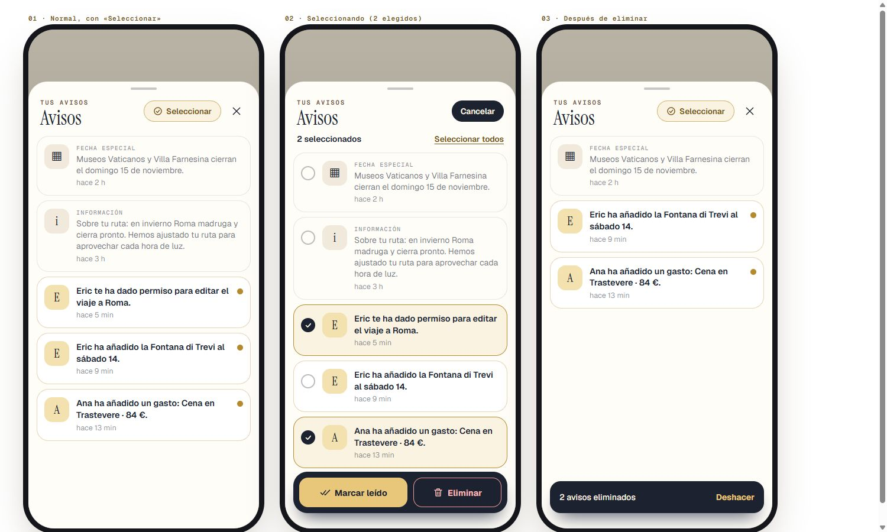
✅ Hecho — Cambio 1 de Eric: la campana es a pantalla completa; arriba «TUS AVISOS», «Avisos» grande y [Seleccionar]; se cierra como hoyOcupa toda la pantalla; la ✕ de al lado de [Seleccionar] la cierra (en Seleccionar solo sale [Cancelar], como en Design). Dónde: Toca la campana de la cabecera de RUTA; cierra con la ✕. ✅ Hecho — Cambio 2 de Eric: [Marcar leído] y [Eliminar] como hoja desde abajo con dos tarjetas («Marcar como leído» y, la última y en rojo, «Eliminar»), formato de Hojas Opciones; sube al elegir el primero, se queda sin tapar la lista y baja al no quedar ninguno o con [Cancelar]Usa las tarjetas de HojaOpciones (OpcionTarjeta) dentro de una hoja que no oscurece ni bloquea la lista (si no, no se podría seguir eligiendo). La hoja no lleva el rótulo grande ni la ✕ de las demás hojas, porque arriba ya está «2 seleccionados» y [Cancelar]; así es pequeña. La lista deja 280 px de hueco abajo. Dónde: Campana › Seleccionar › toca un aviso: sube la hoja; toca [Cancelar] o quita la selección: baja. 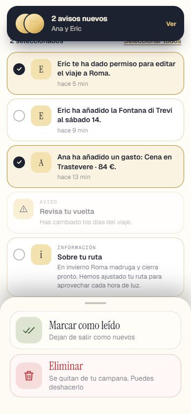
✅ Hecho — Los textos de la pieza son de ejemplo; los de verdad, con artículo también en los de cierre («Los Museos Vaticanos y la Villa Farnesina cierran…»). El aviso de que cierran museos es INFORMACIÓN (la «i»); «Fecha especial» y el calendario, para «Mañana empieza tu viaje» y parecidosLo resuelve la parte de la franja y los textos: «Sobre tu ruta» solo sale si sus días coinciden con los de la ruta abierta, y «Mañana empieza tu viaje» solo el día de verdad antes (ver «§4b2» y «de dónde salían» en el informe). Dónde: Campana: los avisos de fechas del viaje (cierres) con la «i» y «INFORMACIÓN». ✅ Hecho — Fuera la etiqueta «Leído» («Fecha especial · Leído», «Información · Leído»): nuevos en negrita con el puntito dorado, leídos en grisYa solo sale el tipo («INFORMACIÓN», «FECHA ESPECIAL», «AVISO»). Nuevo: negrita 600 y puntito dorado; leído: 400 en gris. Dónde: Campana: compara un aviso nuevo y uno leído. ✅ Hecho — Cambia lo de la 10M: abrir la campana YA NO marca todo como leído; cada aviso sigue nuevo hasta que el viajero lo abre o lo marcaQuitado el «al cerrar, todo leído». También fuera «Marcar todos como leídos» y el botón «Marcar como leído» de cada aviso (ahora es con Seleccionar). Dónde: Abre la campana con avisos nuevos y ciérrala: el punto de la campana de la cabecera sigue ahí. ✅ Hecho — Normal (01): tocar un aviso lo abre (propuesta, gasto, día que ha cambiado…) y lo marca leído; los que llevan botones dentro ([Aceptar] [Rechazar]…) los siguen llevandoTocar abre lo de siempre (abrirAviso) y los avisos que no abrían nada ahora se dan por leídos al tocarlos. En los avisos con botones (gasto pendiente, entrada) tocar fuera de los botones lo da por leído. Los avisos de arreglar (error, «Revisa tu vuelta») no se marcan: cuentan hasta que se arreglan. Dónde: Campana › toca «Eric ha cambiado el viaje…» (abre la ruta) o «Ana quiere añadir al presupuesto» (con [Rechazar] [Aceptar]). 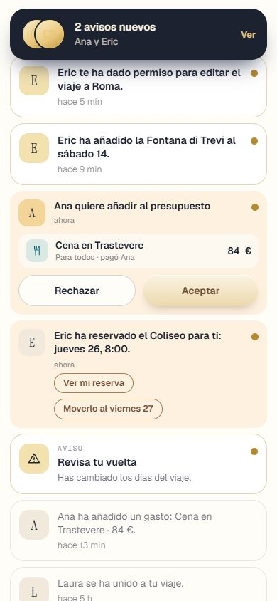
✅ Hecho — [Seleccionar] (02): circulito a la izquierda de cada aviso, al tocar se elige (fondo dorado claro y ✓ oscuro), «2 seleccionados» y «Seleccionar todos», [Seleccionar] pasa a [Cancelar], hoja abajo y, si todos los elegidos ya están leídos, «Marcar como no leído»Los avisos de arreglar (errores y avisos del viaje) no llevan circulito porque no se eliminan ni se marcan: se arreglan. «Marcar como no leído» funciona también en la cuenta (guardado en el servidor con la migración 0046 y siempre en el móvil). Dónde: Campana › Seleccionar; elige leídos solos para ver «Marcar como no leído». ✅ Hecho — Eliminar (03): sin preguntar, los quita de su campana, franja oscura «2 avisos eliminados» con [Deshacer] unos segundos, y la campana vuelve a la normalLa franja dura 6 s. [Deshacer] devuelve los avisos. Lo eliminado se recuerda al cerrar y abrir (en el móvil siempre; en el servidor con la migración 0046, SIN aplicar: hay que aplicarla para que también valga en otro móvil). Dónde: Campana › Seleccionar › elige 2 › Eliminar; prueba [Deshacer] antes de que se vaya la franja. 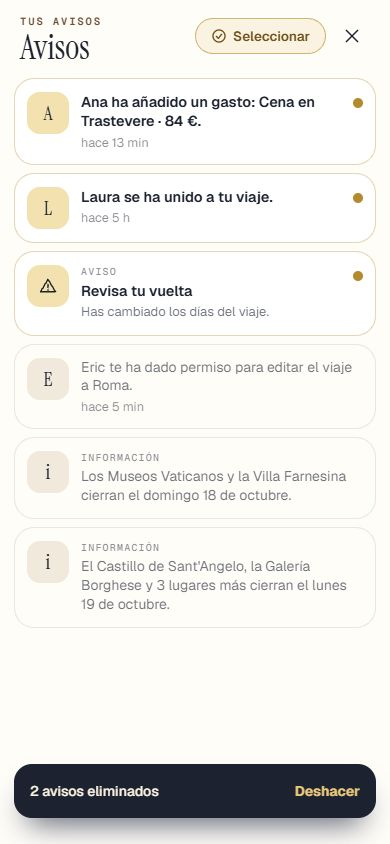
✅ Hecho — El aviso «Sobre tu ruta» («2 días en Roma dan para mucho…»): cada aviso tiene que ser del viaje que está abierto; mira de qué viaje sale ese textoLo resuelve la parte de la franja y los textos: «Sobre tu ruta» solo sale si sus días coinciden con los de la ruta abierta, y «Mañana empieza tu viaje» solo el día de verdad antes (ver «§4b2» y «de dónde salían» en el informe). Dónde: Campana en el viaje del 11 al 15 de noviembre: «Sobre tu ruta» debe hablar de 5 días. ✅ Hecho — «Mañana empieza tu viaje a Roma · ahora» salió el 26-oct con un viaje del 11 al 15 de noviembre: mira por qué y que solo salga el día antes, en la hora del destinoLo resuelve la parte de la franja y los textos: «Sobre tu ruta» solo sale si sus días coinciden con los de la ruta abierta, y «Mañana empieza tu viaje» solo el día de verdad antes (ver «§4b2» y «de dónde salían» en el informe). Dónde: Campana con un viaje que empieza dentro de más de un día: no debe salir. ⚠️ A medias — Textos de cierre con artículo: «Los Museos Vaticanos y la Villa Farnesina cierran el domingo 15 de noviembre.» (información, la «i»)Artículos y plural hechos al enseñarlos (el motor no se toca). La «i» en lugar del calendario en la fila de la campana es de la campana (G2a); en la franja ya va así. Dónde: Campana con un viaje que tenga cierres ✅ Hecho — «Sobre tu ruta» («2 días en Roma…») saliendo en un viaje de 5 días: de qué viaje sale y arreglarloSalía del texto guardado en la ruta al crearla (route.contextBanner), que no se actualiza si cambian los días. Ahora solo sale si coincide con los días del viaje. Los avisos de la cuenta de otros viajes no se filtran por viaje abierto (queda por decidir). Dónde: Viaje de 5 días creado antes con 2 días, o al cambiar fechas ✅ Hecho — «Mañana empieza tu viaje a Roma · ahora» salió hoy con el viaje del 11 al 15 de nov: por qué y que solo salga el día antesEl aviso de los 10 días se crea una vez con las fechas de ese momento y nunca se revisaba. Ahora el servidor lo oculta si el viaje cambió de fecha o no existe y cuenta el «Mañana»/«En N días» con la fecha de hoy en la hora del destino. No puedo ver la base de datos de Eric para saber el viaje exacto. Dónde: Campana el 26-oct con el viaje del 11 al 15 de nov: no debe salir §3 · Los menús de opciones ✅ Hecho — Menú de una parada (01) igual que Design: PARADA + nombre, tarjetas con icono de color, línea gris, «›», Quitar parada la última en rojoOrden de Design. Extras que se quedan antes de Quitar: «Devolverla a la ruta» (parada saltada), «Desmarcar visto», «Quitar del viaje» (parada reservada, sustituye al resto). En días libres no sale «Cambiar parada». «Mover antes/después» llevan «›» como en Design aunque no abran pantalla. Dónde: DÍAS > abrir un día > «···» de una parada (administrador o Editar) 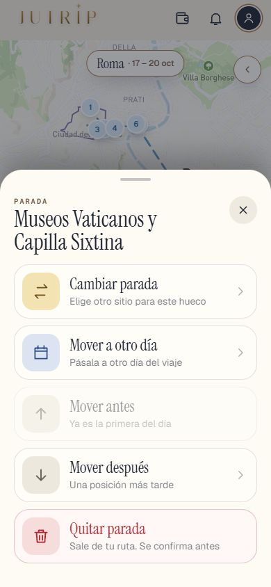
✅ Hecho — «Mover antes» en gris diciendo por qué («Ya es la primera del día»); lo mismo con «Mover después» en la últimaDónde: «···» de la primera parada de un día ✅ Hecho — «Mover a otro día» abre la ruedita de días dentro de la misma hojaLa ruedita es un selector, no una lista de opciones: se queda como estaba dentro de la hoja nueva. Dónde: «···» de una parada > Mover a otro día 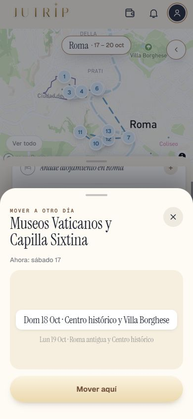
✅ Hecho — Menú de un día (02): Añadir lugares, Añadir una excursión y Eliminar día (la última, roja)Además, si procede: Cambiar el nombre y Mover el día antes/después (días libres), Volver al día propuesto y Recuperar este día; todos con el mismo formato antes de Eliminar día. Los textos de líneas de nombres/mover son míos (Design no los trae). Dónde: DÍAS > «···» de la cabecera de un día (administrador o Editar) 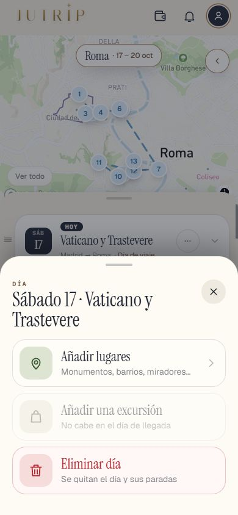
✅ Hecho — «Añadir lugares» abre EXPLORAR/añadir para ese día (en todos los días)Usa openAddFlow(dia), la misma pantalla de añadir de los días libres. Dónde: DÍAS > «···» de un día > Añadir lugares ✅ Hecho — «Añadir una excursión» hace lo mismo que el interruptor [Roma | Excursión] y solo donde cabe (no llegada ni vuelta); si no, en gris con el porqué«Cabe» = el día lleva interruptor. En gris: «No cabe en el día de llegada / de vuelta / No cabe una excursión este día». Si el día ya está en Excursión la tarjeta pasa a «Volver a Roma». En el viaje de pruebas ningún día lleva interruptor: la opción activa se probó inyectando uno y comprobando que pide 'excursion' como el interruptor (no se probó el cambio real contra el servidor). Dónde: DÍAS > «···» de un día; probar en el día con interruptor [Roma | Excursión] 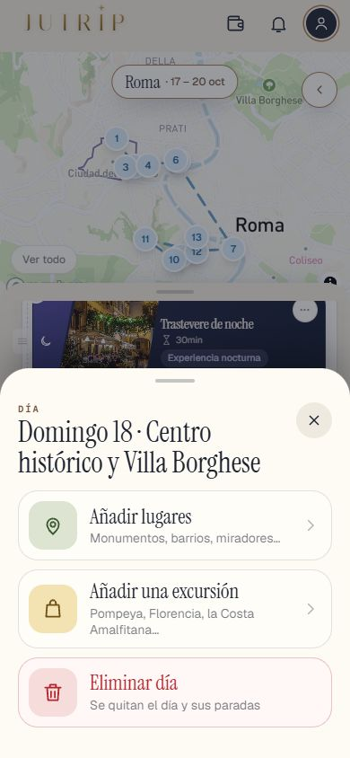
✅ Hecho — «Personas del viaje» (03): lista con permisos, «Añadir a alguien · Con un enlace o un código» en vez de «+ Invitar a alguien»El invitado ve la lista y, abajo, «Salir del viaje» como tarjeta roja. Dónde: RUTA > caras del viaje (administrador); como invitado, la misma pantalla 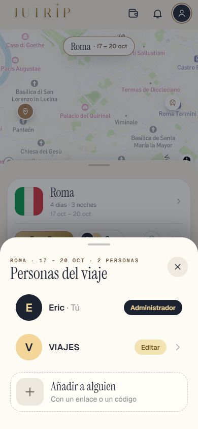
✅ Hecho — Al tocar a una persona (04): su hoja con «Cambiar permiso · Editar o Recomendar» y «Quitar del viaje» en rojoUsa «Editar o Recomendar» (no los nombres viejos de Design). Dónde: RUTA > caras del viaje > tocar a otra persona (administrador) 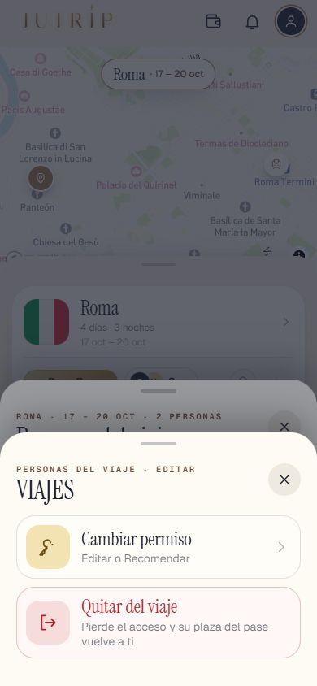
✅ Hecho — Hoja del permiso con tarjetas: Administrador gris con candado y «Solo Eric», Editar, Recomendar; la elegida en azul oscuroDesign no trae esta pantalla: iconos (lápiz, bombilla) y composición son míos sobre el mismo formato. Dónde: Personas del viaje > persona > Cambiar permiso 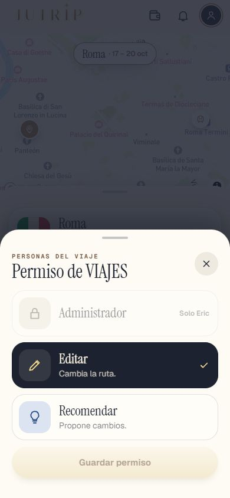
✅ Hecho — Menú de parada de quien solo recomienda durante el viaje (Ver la ficha, Cómo llegar) con el mismo formatoProbado por código y por el render; sin captura propia. Dónde: DÍAS con cuenta Recomendar, durante el viaje > «···» de una parada ✅ Hecho — «Cambiar portada» con tarjetasTres tarjetas: Una foto de tu viaje (despliega la cuadrícula debajo), Una foto de mi galería, Volver a la del destino. Dónde: Perfil > Mis viajes > «Cambiar portada» de la tarjeta 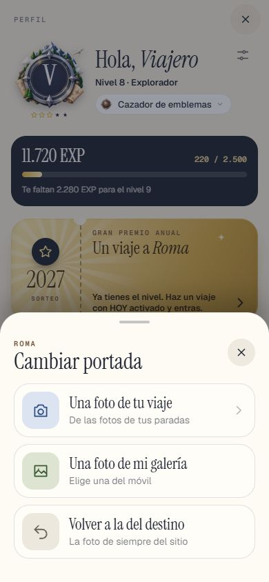
✅ Hecho — Otros menús de la app con el mismo formato: «+ Añadir día» (qué quieres hacer) y «Abrir ruta en…»Los «tres puntitos» de RESERVAS, de un gasto, de la tarjeta de «Mis viajes» y del perfil NO existen como menús en el código actual (son botones directos o filas que abren su pantalla), así que no hay nada que convertir. Los diálogos de confirmación («¿Eliminar…?», «¿Quitar a Luis…?») siguen como hojas de confirmación, no son menús de opciones. Dónde: DÍAS > «+ Añadir día»; conectores de una parada > Abrir ruta en… 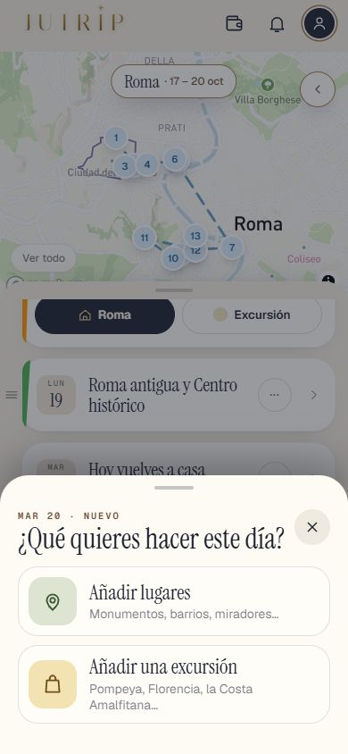
§4 · Los permisos con nombres cortos ✅ Hecho — «Administrador» sin texto debajo, en gris con candado y «Solo {nombre del administrador}» a la derechaDónde: Personas del viaje > persona > Cambiar permiso ✅ Hecho — «Editar» (antes «Puede editar») con «Cambia la ruta.» y «Recomendar» (antes «Solo recomendar») con «Propone cambios.»Cambiado en textoDelPermiso/lineaDelPermiso (fuente única): etiquetas de la lista, hoja del permiso y demás. No quedan cadenas visibles con los nombres viejos en src ni server. Dónde: Personas del viaje (lista y hoja del permiso) ✅ Hecho — Fuera las frases largas de lo que puede y no puede hacer; los avisos siguen en lenguaje normalLos textos de los avisos no se tocaron. Dónde: Hoja del permiso §4b · La franja de aviso nuevo ✅ Hecho — Cualquier aviso nuevo con la app abierta (permisos, propuestas, gastos, cambios, entradas, sorteo…) saca la franja arriba y se queda en la campanaDetecta avisos nuevos en cada carga de la lista (Realtime, cada minuto, al volver). Probado con 11 tipos. Dónde: Con dos móviles: Eric cambia un permiso o añade un sitio y mira el otro móvil (cuenta invitada) 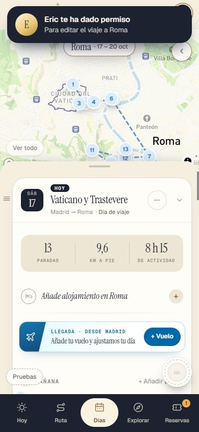
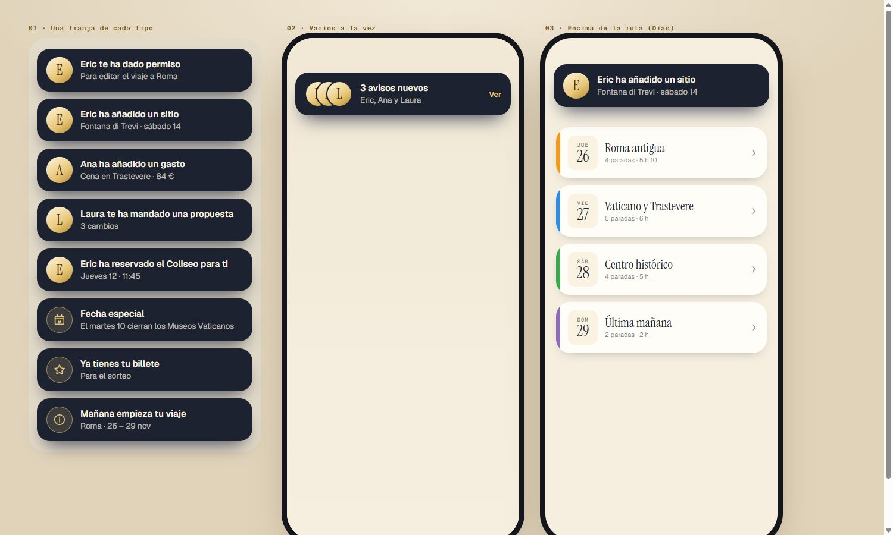
✅ Hecho — Sonido corto y suave de campanita, el mismo para todos; respeta «Sonido de los momentos»; sin vibración; no falla si el iPhone no dejapublic/sonidos/aviso.wav (provisional, generado). El audio se prepara en el primer toque. En iPhone real hay que comprobarlo: no se puede probar aquí. Dónde: Ajustes > Sonido de los momentos activado/apagado, y esperar un aviso con el móvil ya tocado ✅ Hecho — Varios a la vez: una sola franja «3 avisos nuevos» y un solo sonidoSe juntan los que llegan casi a la vez (1,5 s); uno que llega después sustituye a la franja anterior. Dónde: Hacer 3 cambios seguidos desde el otro móvil 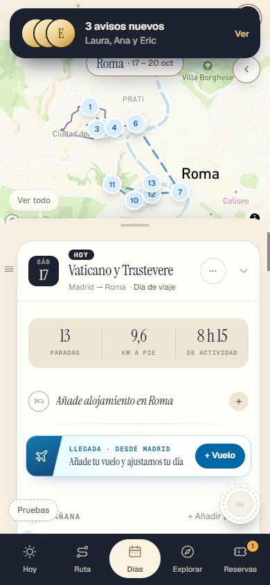
✅ Hecho — Franja como Design 11: oscura, moneda dorada, título en negrita y detalle debajoMedidas, colores, letras y sombra copiados de la pieza. Diferencia: en una web normal baja 12 px (en el iPhone con barra, lo que mida la zona segura). Dónde: Cualquier pantalla de la app ✅ Hecho — Icono: inicial/foto de la persona; si avisa la app, su icono dorado (calendario fechas especiales, «i» información, estrella sorteo, ticket entradas)Cruce de la pieza corregido como pedía el prompt. El calendario es el de Design (lleva una cruz). El ticket no está en Design: dibujado fino en el mismo estilo. Dónde: Aviso «Mañana empieza tu viaje», sorteo, entrada que no cuadra ✅ Hecho — Varios a la vez: monedas apiladas, «3 avisos nuevos», nombres debajo y [Ver] que abre la campanaDónde: Tres avisos de golpe y tocar la franja ✅ Hecho — Al tocar la franja abre lo que sea y marca leído; deslizada hacia arriba se va antesLos avisos con botones (gasto pendiente, entrada del dueño) abren la campana en ese aviso sin darlo por leído. Usa abrirAviso.ts. Dónde: Tocar y deslizar una franja ⚠️ A medias — No tapa la barra de arriba del iPhone (hora y batería)Usa env(safe-area-inset-top)+4 px; comprobado a 390 px en el navegador, no en un iPhone real. Dónde: iPhone, con la app instalada en la pantalla de inicio ✅ Hecho — Una misma pieza para todos los avisos (también el «Eric ha aceptado tu gasto» y las líneas «Ya no formas parte…»), franja y campana a la vez con un solo sonidoGastosCompartidosHost y CompartidoHost usan ahora la misma franja; se quitó la pastilla vieja. Duplicados evitados por clave. Dónde: Aceptar/rechazar un gasto del otro móvil; quitar a alguien del viaje §4b2 · Los textos de los avisos ✅ Hecho — Una sola regla de textos para campana, franja y móvil: frases cortas, artículo, plural, día bien dicho, lo que decidió la personashared/avisos/textos.js; la franja también viene del servidor (con artículos) y se arma en el móvil si falta. Lista antes/después en docs/dias/_10n4_textos_avisos.md. Sin migración 0047 (ningún SQL escribe texto). Dónde: Campana de cualquier cuenta ✅ Hecho — Repaso uno a uno de todos los textos existentes con antes y despuésVer _10n4_textos_avisos.md. Los textos de reservas/lluvia/vuelos calculados en el móvil se revisaron y se dejaron salvo el de «entrada no cuadra» (ahora con artículo). Dónde: docs/dias/_10n4_textos_avisos.md §4c · Añadir un sitio: el aviso de que cierra ✅ Hecho — Fuera el recuadro con [Ponerlo el …] y [Dejarlo … igual]: solo un aviso en rojo, sin botones, debajo de la listaSe muestra cuando el día elegido cierra (también si es el que venía preseleccionado). Dónde: EXPLORAR > Añadir (+) a un sitio > tocar un día que cierra (p. ej. la Galería Borghese un lunes). Administrador o invitado. 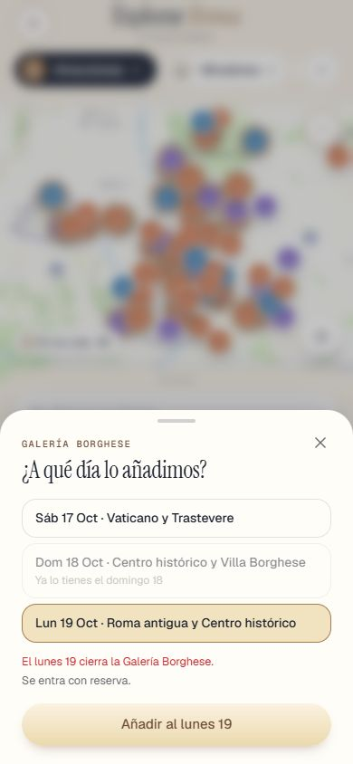
✅ Hecho — Texto «El miércoles 11 cierran los Museos Capitolinos.»; el viajero elige otro día o lo deja; nunca se le niega nada[Añadir …] sigue activo con el día que cierra. Dónde: Misma hoja; pulsar [Añadir al lunes 19]. ✅ Hecho — La lista de días igual para todos: sin etiquetas ni marcas en el que cierraSe mantienen los motivos de bloqueo que no son de cierre (ya lo tienes ese día, excursión de día entero). Dónde: Misma hoja, lista de días. ✅ Hecho — Concordancia: «cierran los Museos Capitolinos», «cierra la Galería Borghese»cierraElSitio() en src/lib/articulos.ts (plural por el artículo de la tabla). Dónde: Misma hoja con un sitio en plural (Museos Capitolinos, Termas de Caracalla). §4d · Las entradas en la ficha y en DÍAS ⚠️ A medias — Regla de los tres colores: frambuesa te falta, verde ya lo tienes, azul oscuro con dorado otro del grupo la tieneAplicado en el botón de la parada de DÍAS y en la pestaña Entradas de la ficha. No tocados: filas de RESERVAS, Free Tour y excursiones (siguen con su verde/frambuesa de antes). Dónde: DÍAS (botón de la parada) y ficha > Entradas; administrador y invitado. 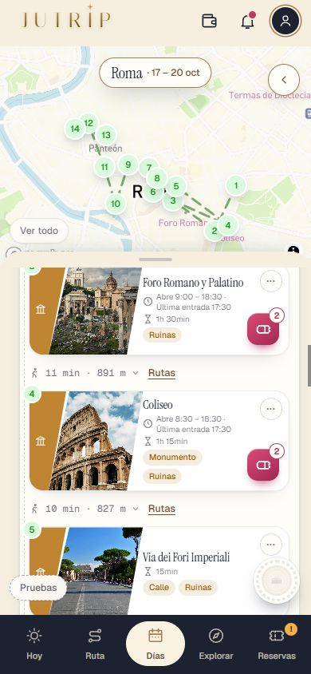
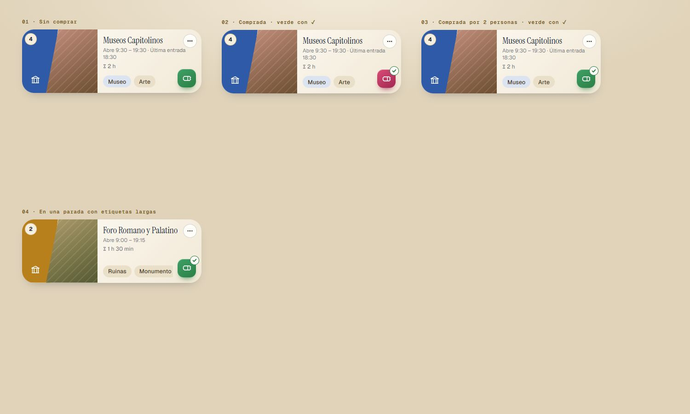
✅ Hecho — Cabecera de la ficha: foto 118 con cámara, nombre, pastillas y a la derecha el corazón con el númeroPestañas y tirador ajustados a Design (50 px, 15 px). Dónde: Abrir la ficha de cualquier sitio del catálogo. 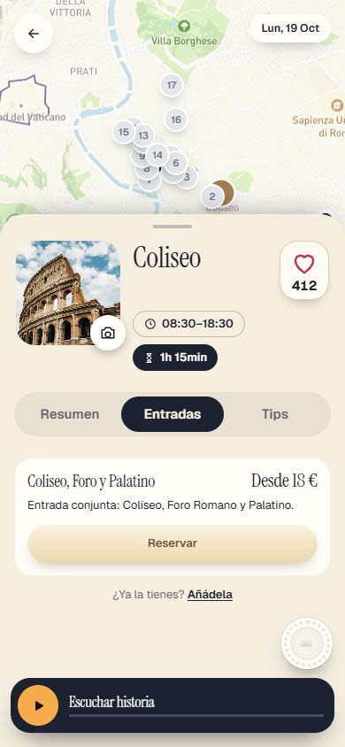
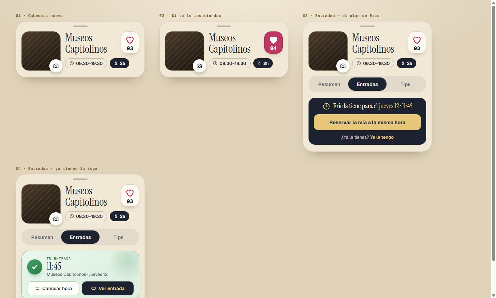
✅ Hecho — El corazón se llena en frambuesa y sube a 94; al volver a tocarlo se quitaMisma cuenta única de «me gusta» (useMeGustaStore). Dónde: Ficha de un sitio > tocar el corazón. 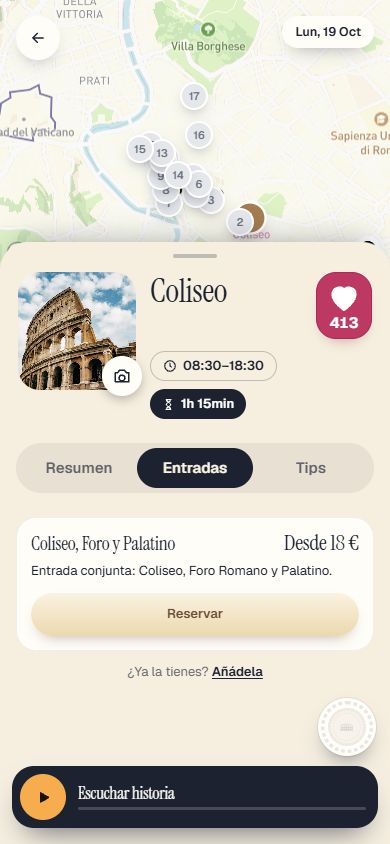
✅ Hecho — Pestaña Entradas con lo tuyo arriba del todo, visible sin scrollDónde: Ficha > Entradas, con cualquier cuenta. 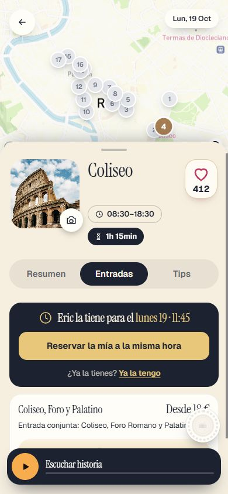
✅ Hecho — 03: recuadro azul oscuro con dorado «Eric la tiene para el jueves 12 · 11:45», [Reservar la mía a la misma hora] y «¿Ya la tienes? Ya la tengo»Solo sale al invitado que no está incluido en la entrada del dueño. Dónde: Cuenta invitada no incluida > ficha > Entradas. ⚠️ A medias — 04: recuadro verde con ✓, «Tu entrada», hora en grande, «Sitio · día», [Cambiar hora] y [Ver entrada]; fuera «Fijada»[Ver entrada] queda puesto pero no hace nada: su pantalla es de la 10T. A quien le cubre la entrada del dueño no le sale [Cambiar hora]. Dónde: Administrador con entrada reservada > ficha > Entradas. 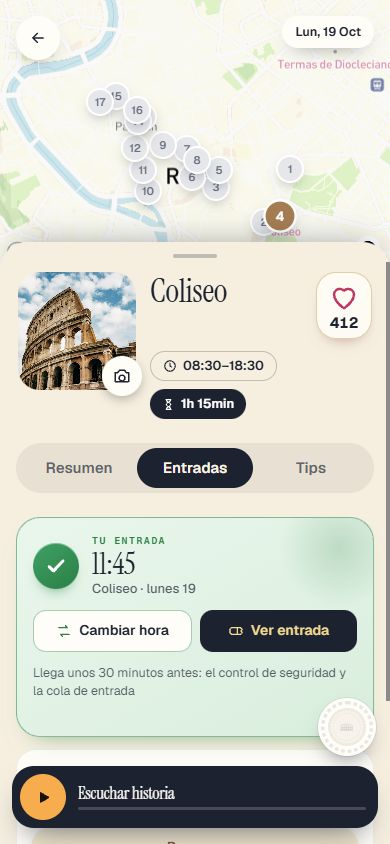
✅ Hecho — Debajo, las entradas para comprar como hasta ahoraDónde: Ficha > Entradas. ✅ Hecho — Tarjeta de DÍAS: fuera «Comprar entrada» y la pastilla «Reservada ✓»; botón redondo con icono de entrada abajo a la derechaSin palabras, también para el dueño. Efecto colateral: la hora de la entrada ya no sale en la tarjeta (solo en la ficha). Dónde: DÍAS > tarjeta de una parada con entradas. 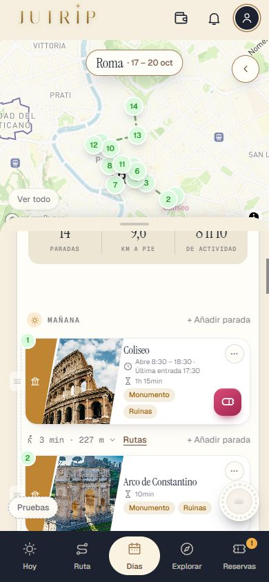
✅ Hecho — Frambuesa si no la tienes, con numerito cuando otros del grupo la tienenEl número es cuántas personas cubre la entrada del dueño. Dónde: Invitado no incluido > DÍAS. ✅ Hecho — Verde con ✓ blanco arriba a la derecha si ya tienes la tuyaEn Design las piezas 01 y 02 tienen los colores cruzados respecto a sus títulos; seguido el texto del prompt. Dónde: Administrador con entrada, o invitado incluido > DÍAS. 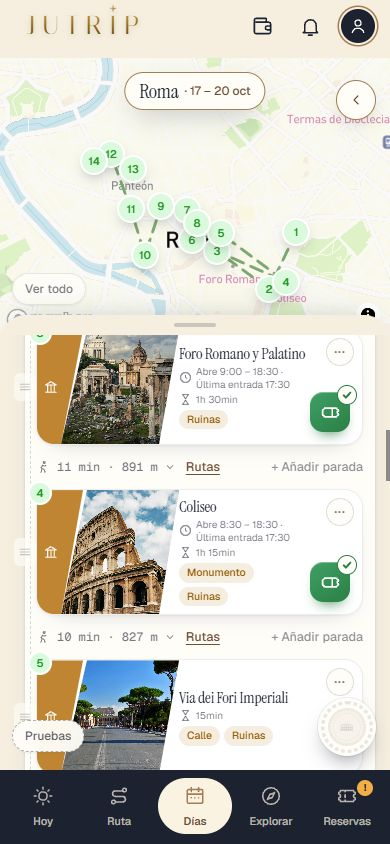
✅ Hecho — Al tocar el botón, la ficha abierta en la pestaña EntradasDónde: DÍAS > botón de la entrada. ✅ Hecho — Las etiquetas nunca pasan por debajo del botón: si no caben, bajan de líneaLas etiquetas ya no son nowrap: una muy larga se parte en dos líneas dentro de su pastilla. Dónde: DÍAS > paradas con 3 o más etiquetas. 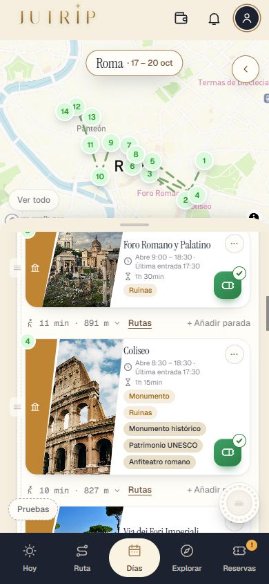
§5 · La prueba ✅ Hecho — Prueba nueva pruebaTanda10N4 (lápiz y logros, campana, franja, menús, entradas y perfil)Prueba de la Tanda 10N4: 381 comprobaciones, 0 fallos. Con 10N 418/0, 10N3 474/1 (el aviso en directo de Ana, solo bajo carga; suelto 47/0), 10P 3625/0, 10O 129/0, pruebaJutrip 129/0. Dónde: No es de móvil. ✅ Hecho — La batería rápida y pruebaJutrip (si algo falla solo al correr con las demás y solo pasa solo, se dice y se arregla en la 10S)Bateria completa: 22 MAL, todos por expectativas antiguas ya actualizadas (sin regresiones); sueltas pasan con 0 fallos. Lo que falle solo con otras pruebas a la vez y pase suelto va a la 10S. Dónde: No es de móvil. §5 · Capturas ✅ Hecho — Capturas en docs/dias/capturas_jutrip/ y esta página a tamaño de móvil, cada una al lado de la de DesignDónde: Esta página. §6 · El informe ✅ Hecho — Apartado «10N4» en docs/dias/INFORME_TANDA10B.md (con de dónde salían «Sobre tu ruta» y «Mañana empieza tu viaje», la lista de menús cambiados y la lista de textos de avisos) y esta lista al finalDónde: No es de móvil. Todas las capturas
10n4_campana_01_normal 10n4_campana_01b_botones 10n4_campana_02_seleccionando 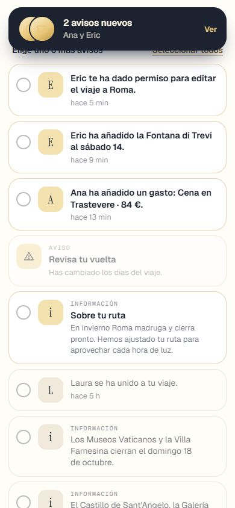
10n4_campana_02a_seleccionar_vacio 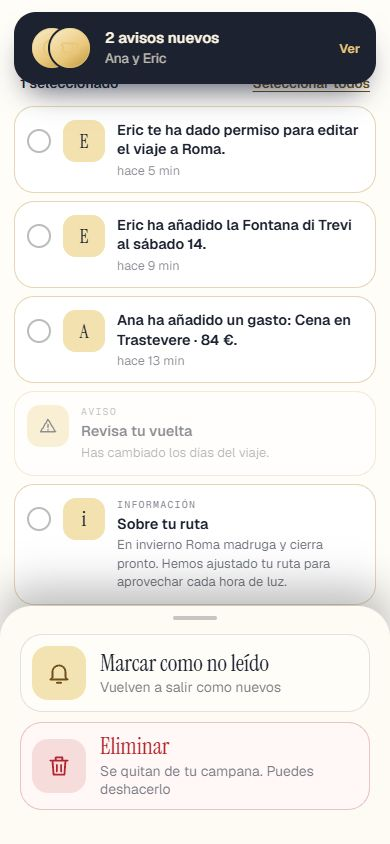
10n4_campana_02c_no_leido 10n4_campana_03_eliminados 10n4_cierra_aviso 10n4_design_avisos_franja 10n4_design_avisos_gestion 10n4_design_ficha_cabecera 10n4_design_hojas_opciones 10n4_design_parada_entrada 10n4_entradas_cabecera_01 10n4_entradas_cabecera_02 10n4_entradas_dias_etiquetas_largas 10n4_entradas_dias_falta 10n4_entradas_dias_grupo 10n4_entradas_dias_tengo 10n4_entradas_ficha_del_grupo 10n4_entradas_ficha_sin_entrada 10n4_entradas_ficha_tu_entrada 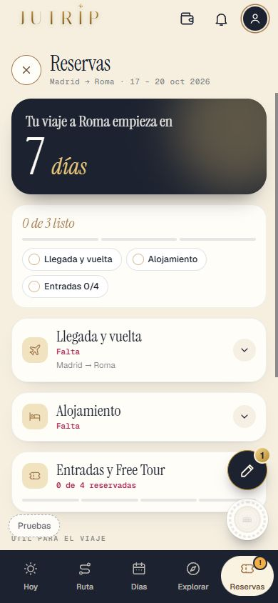
10n4_flotantes_bookings 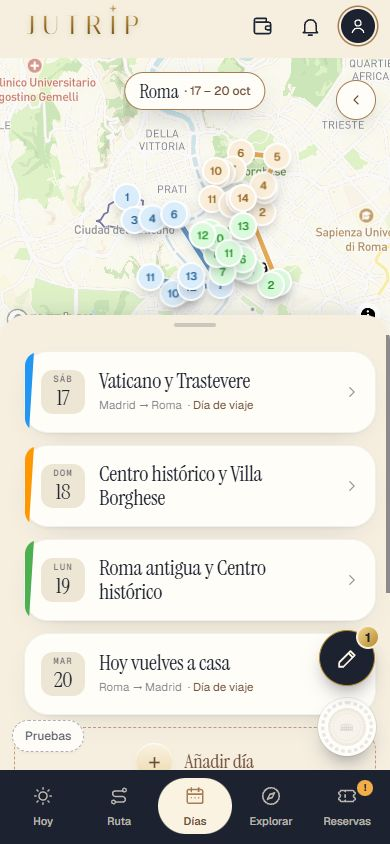
10n4_flotantes_days 10n4_flotantes_explorar_completo 10n4_flotantes_explorar_hoja 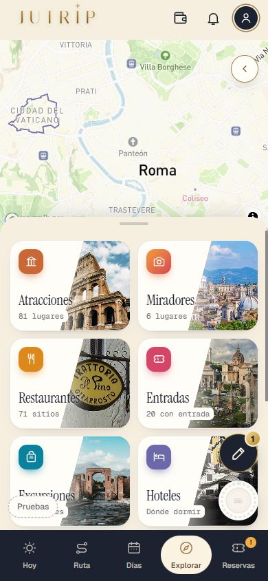
10n4_flotantes_explore 10n4_flotantes_ficha 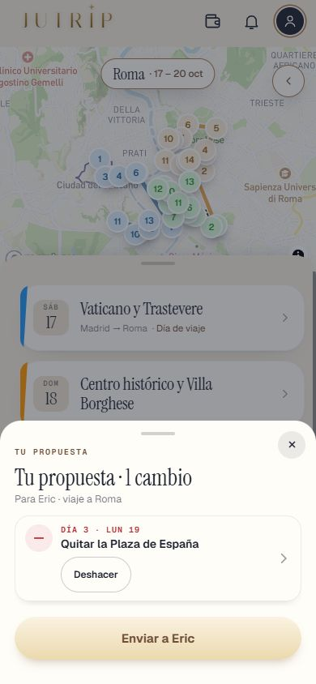
10n4_flotantes_hoja_propuesta 10n4_flotantes_hoy_sin_pase 10n4_flotantes_pase_sin 10n4_flotantes_presupuesto 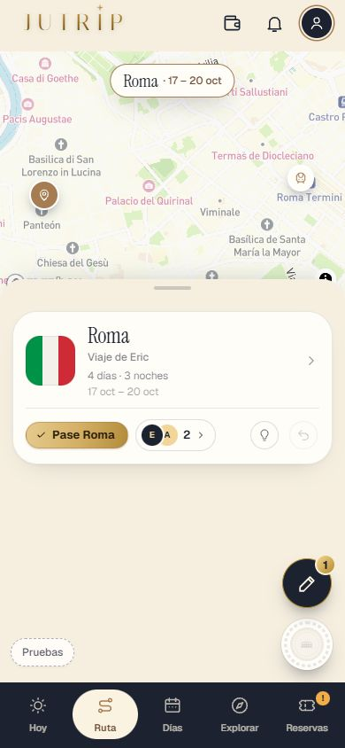
10n4_flotantes_route 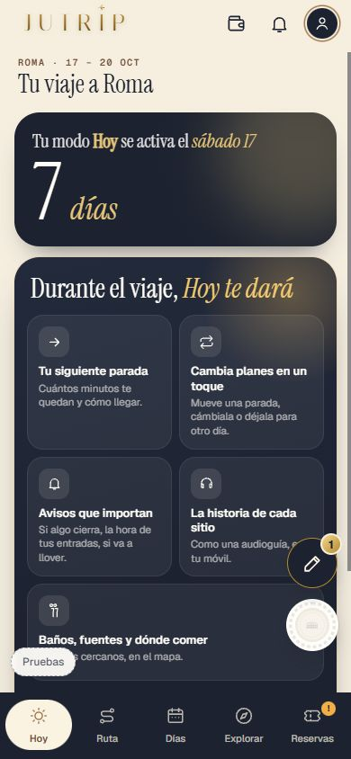
10n4_flotantes_today 10n4_franja_aceptada 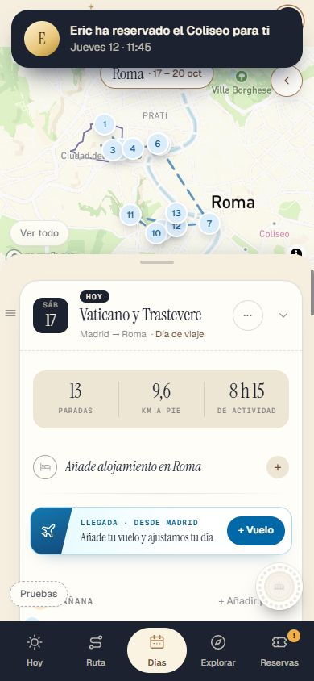
10n4_franja_entrada 10n4_franja_fecha 10n4_franja_gasto 10n4_franja_gasto_ok 10n4_franja_info 10n4_franja_permiso 10n4_franja_propuesta 10n4_franja_sitio 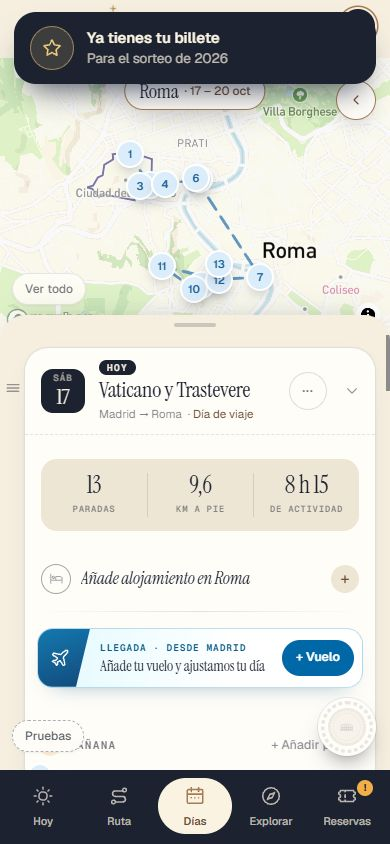
10n4_franja_sorteo 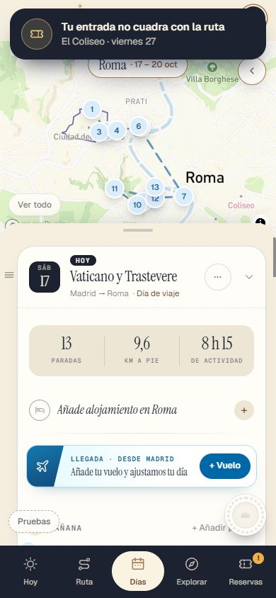
10n4_franja_ticket 10n4_franja_varios 10n4_menus_01_parada 10n4_menus_01b_mover_a 10n4_menus_02_dia_con_excursion 10n4_menus_02_dia_llegada 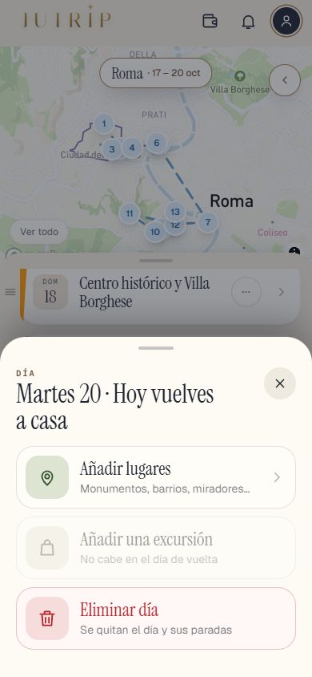
10n4_menus_02_dia_vuelta 10n4_menus_03_anadir_dia 10n4_menus_03_personas 10n4_menus_04_persona 10n4_menus_05_permiso 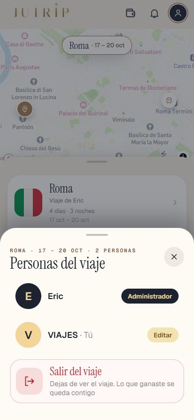
10n4_menus_06_invitado 10n4_menus_07_cambiar_portada 10n4_perfil_logros_apagados 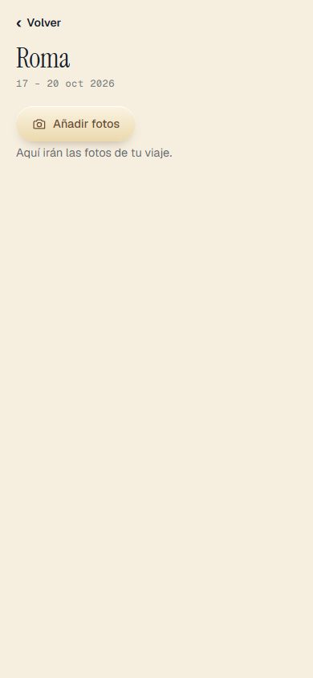
10n4_perfil_logros_apagados_album 10n4_perfil_logros_encendidos